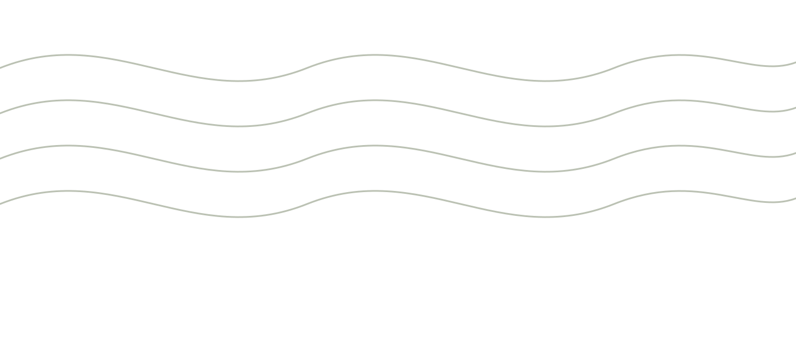

Végétal d'abord
Shampooings, soins et colorations issus de gammes naturelles et végétales. On vous dit ce qu'on met sur votre tête, et pourquoi.

Salon végétal · L'Isle-sur-la-Sorgue
Coupe femme, homme et enfant, coloration végétale et spa du cuir chevelu. Notre équipe travaille avec des produits naturels et végétaux, au centre commercial Super U de L'Isle-sur-la-Sorgue.
Uniquement sur rendez-vous · Mardi au samedi
Le salon
Un salon de quartier, mixte, où l'on prend le temps du diagnostic avant de sortir les ciseaux. Nos shampooings, soins du cuir chevelu et colorations sont choisis dans des gammes naturelles et végétales — parce qu'un cheveu en bonne santé tient mieux la coupe.
Shampooings, soins et colorations issus de gammes naturelles et végétales. On vous dit ce qu'on met sur votre tête, et pourquoi.
Toute la famille au même endroit : la coupe du samedi matin comme le chignon de mariage, sans distinction de rayon.
Massage, gommage, vapeur : on traite la racine avant la longueur. C'est la prestation qu'on vous conseille quand rien ne tient.
Prestations
Chaque prestation commence par un diagnostic du cheveu et du cuir chevelu. Les tarifs dépendent de la longueur et de la technique : ils vous sont annoncés avant de commencer.
Shampooing adapté, coupe travaillée sur cheveu sec ou humide, séchage et finition. On ajuste la ligne à la texture plutôt qu'à la mode du moment.
Ciseaux, tondeuse ou les deux, contours nets, finition coiffante légère. Barbe et nuque rafraîchies sur demande.
Pour les moins de 12 ans, en douceur et sans marchandage. Produits doux, pas de parfum agressif, et une coupe qui tient jusqu'à la rentrée suivante.
Poudres de plantes préparées au bol : la couleur se dépose autour du cheveu au lieu de l'ouvrir. Reflets chauds, gaine renforcée, cuir chevelu tranquille. Un test de mèche est réalisé avant la première application.
Racines, balayage ou mèches en fonction de ce que supporte votre fibre. On privilégie les formules les plus douces compatibles avec le résultat visé, et on vous dit quand mieux vaut attendre.
Masques, huiles, soins anti-chute : une cure au salon, puis le protocole à refaire chez vous. Les produits utilisés sont disponibles à la vente.
Mariages, baptêmes, soirées. Essai préalable recommandé pour caler la tenue, les accessoires et l'horaire du jour J. Déplacement possible : demandez-nous.
Tarifs détaillés affichés en salon et sur la fiche Planity.
Signature
Pellicules, démangeaisons, racines grasses et pointes sèches : la plupart des problèmes de cheveux commencent à la racine. Le rituel dure le temps d'un shampooing long — et se termine par un brushing.
Observation du cuir chevelu et quelques questions sur votre routine.
On décolle, on draine, on relance la circulation. C'est le moment préféré de tout le monde.
Sérum ou masque choisi selon le diagnostic, posé sous chaleur douce.
Deux ou trois gestes simples à tenir à la maison, produits en vente au salon.
Rituel racine · 4 étapes
Galerie
Faites défiler : coupes, couleurs végétales, matières et coulisses. (Les visuels ci-dessous sont des illustrations d'attente — voir assets/img/README.md pour y glisser vos photos.)
À emporter
Le salon vend les produits utilisés pendant la prestation, pour ne pas défaire en trois shampooings le travail d'une matinée.
Doux, sans surcharge, choisis selon le cuir chevelu.
Masques et huiles pour longueurs sèches ou colorées.
Tenue, texture, définition de boucle — sans effet carton.
Cures ciblées, à suivre dans la durée. On vous explique le rythme.
Infos pratiques
Accueil uniquement sur rendez-vous.
80 chemin des Espélugues
Centre commercial Super U
84800 L'Isle-sur-la-Sorgue
Parking du centre commercial, accès de plain-pied.
Ouvrir dans MapsPour un devis couleur ou une coiffure de mariage, appelez-nous : c'est plus rapide qu'un formulaire.
Réservation en ligne 24h/24, ou un coup de fil pendant les heures d'ouverture.